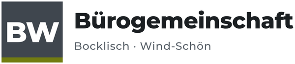
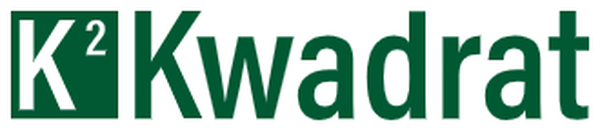
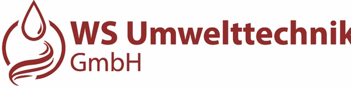

Gewerbeflächen in Lonsee. Direkt an der B10.
Büro-, Laden- und Hallenflächen in drei Gewerbeparks. Ein Ansprechpartner für alles.
- 3Standorte
- 12Firmen
- B10direkt an der Bundesstraße


Der nächste Standort entsteht.
Direkt neben dem Gewerbepark 1 wächst die Erweiterung: eine Gewerbehalle mit sieben Hallentoren und ein zweigeschossiger Kopfbau mit Bäckerei und Terrasse.


- Planungabgeschlossen
- Baueingabe25.11.2025
- Vermietung100 % vermietet
- Bauin Vorbereitung
- Eröffnungfolgt
Wer bei uns zu Hause ist.
Diese Firmen haben ihren Sitz in unseren drei Gewerbeparks.









Drei Gewerbeparks in Lonsee.
Vermietung und Betreuung aus einer Hand durch die GG Vertriebs- und Vermietung GbR.
Gewerbepark 1
Bürohaus auf drei Etagen mit Laden- und Büroflächen und angebauter Kalthalle.
- 8Mieter
- 2017fertiggestellt
- NutzungBüro · Laden · Halle

Gewerbepark 2
Gewerbe- und Hallenflächen in Urspring, Sitz von Gebr. Gorisek und WS Kanalsanierung.
- 4Mieter
- 2019bezogen
- NutzungGewerbe · Halle
 Visualisierung03Neubau · vermietet
Visualisierung03Neubau · vermietetGewerbepark 3
Erweiterung neben GP 1: Gewerbehalle mit sieben Toren und Kopfbau mit Bäckerei.
- 7Hallentore
- 100 %vermietet
- NutzungHalle · Bäckerei
Ihr nächster Standort?
Sprechen Sie mit Gerrit Korner über Flächen, Mieter und Möglichkeiten im Gewerbepark Lonsee.